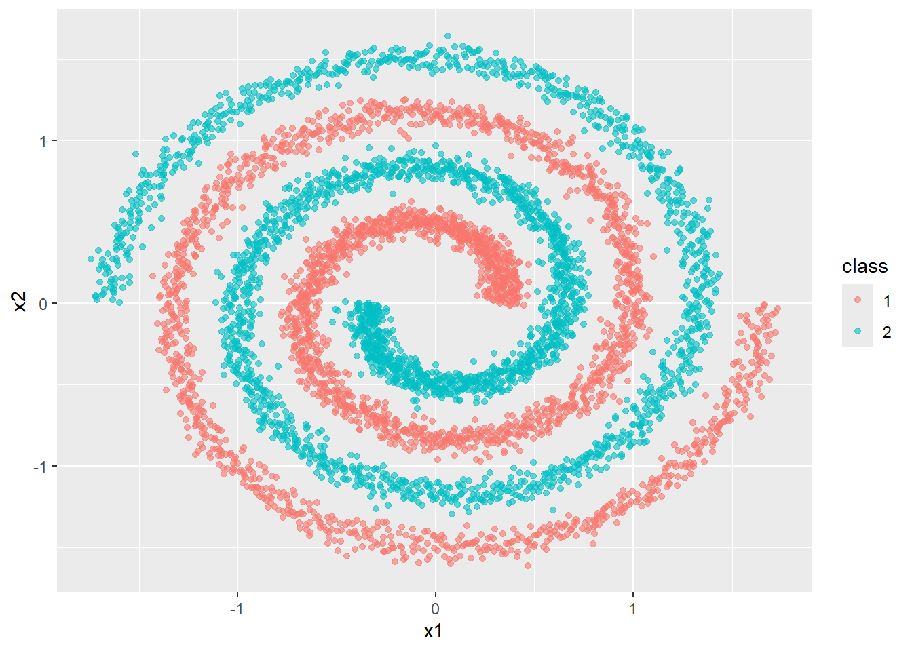
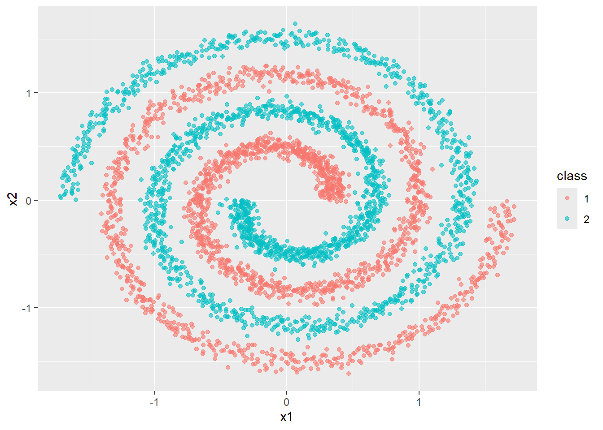
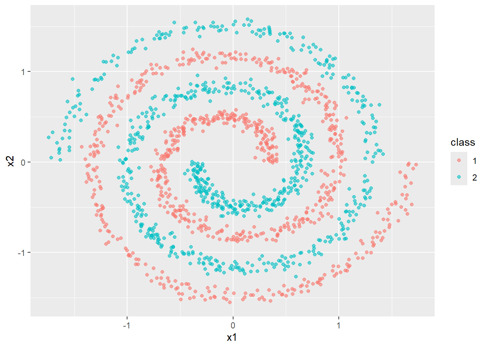
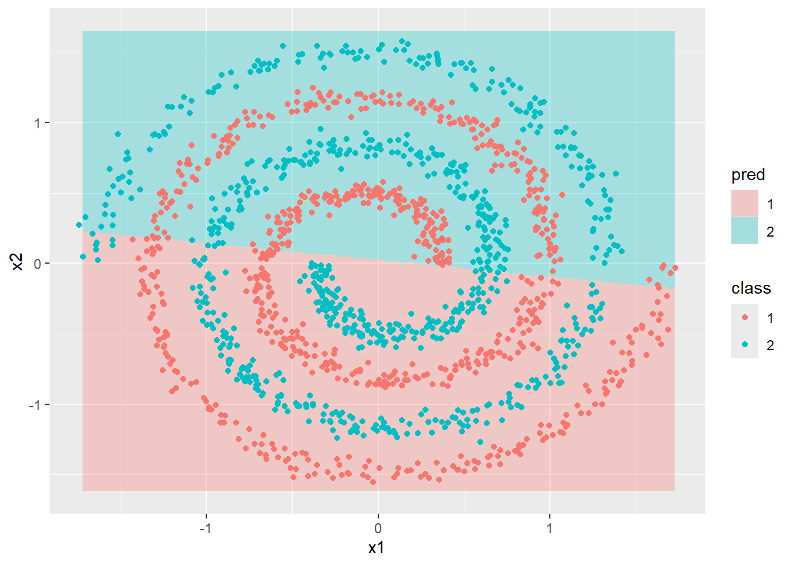
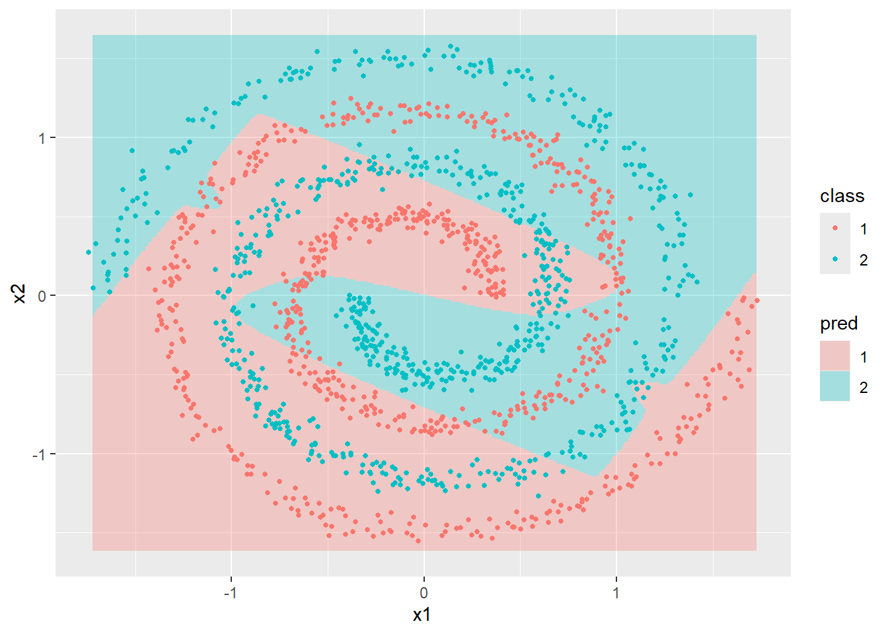
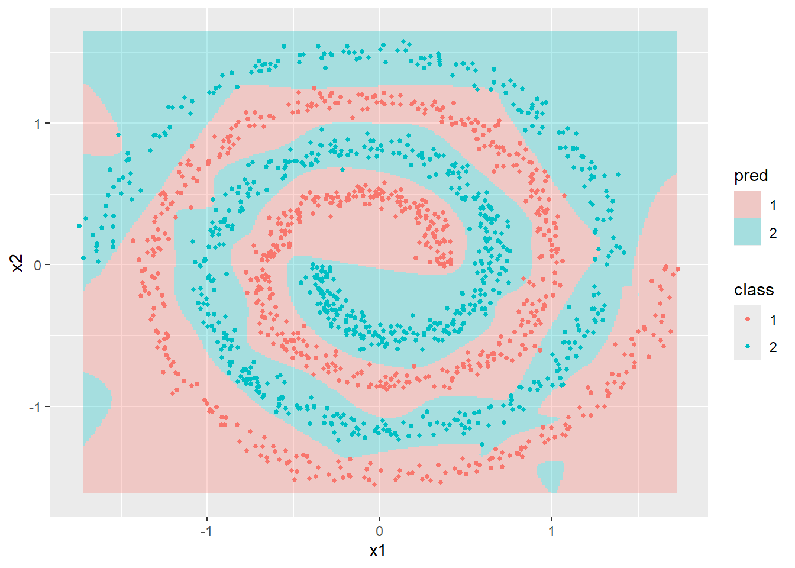

library(nnet)
library(knitr)
library(mlbench)
library(ggplot2)nnet
機械学習
パッケージの概要
nnetパッケージは、multinom関数による多項ロジスティックモデルの実装や、nnet関数による1つの隠れ層を持つニューラルネットワークの実装などができるパッケージです。
実装例
mlbenchパッケージのspirals関数を利用して作成したデータに対して、multinom関数とnnet関数を利用したモデルを実装します。このデータの項目はx1,x2,classの3つの項目となっており、classごとにプロットすると、２つの渦巻き状の分布になります。
x1 x2 class
1 0.3607227 0.693125376 2
2 1.3180797 0.228575056 2
3 0.3273682 0.001898748 1
4 0.3781848 -0.012162607 1
5 1.3140698 0.074558204 2
6 0.3758968 -0.009352450 1
作成したデータを訓練用と学習用に分割します。
idx <- sample(
seq_len(nrow(df)),
size = floor(0.7 * nrow(df))
)
train <- df[idx, ]
test <- df[-idx, ]
ggplot(
train,
aes(x1, x2, color = class)
) +
geom_point(alpha = 0.6)
ggplot(
test,
aes(x1, x2, color = class)
) +
geom_point(alpha = 0.6)
多項ロジスティック回帰モデルの実装
multinom関数を使って、多項ロジスティック回帰モデルを実装します。学習用データにtrain、評価用データにtestを利用して正答率を確認すると50％程度と、低い数値となりました。
fit_multinom <- multinom(
class ~ x1 + x2,
data = train,
trace = FALSE # 学習結果を非表示にする
)
pred_multinom <- predict(fit_multinom,test)
train_acc_multinom <- mean(pred_multinom == test$class)
train_acc_multinom[1] 0.4893333testデータをプロットした結果とモデルで予測した結果を比較すると、今回作成したモデルでは、渦状のデータを上手く表現できていないことがわかります。
grid_train <- expand.grid(
x1 = seq(
min(train$x1),
max(train$x1),
length.out = 300
),
x2 = seq(
min(train$x2),
max(train$x2),
length.out = 300
)
)
grid_train$pred <- predict(
fit_multinom,
grid_train
)
ggplot() +
geom_tile(
data = grid_train,
aes(x1, x2, fill = pred),
alpha = 0.3
) +
geom_point(
data = test,
aes(x1, x2, color = class)
)
ニューラルネットワークの実装
nnet関数を利用し、ニューラルネットワークを実装します。ニューラルネットワークは、基本的には、ユニット数（nnet関数の場合は、sizeで指定）が大きいほど、モデルの表現力が高くなりますが、ユニット数が増加するほど計算負荷が増加するほか、過学習のリスクもあるため、適切なユニット数を設定する必要があります。
まずは、sizeを5に設定します。
fit_nnet_1 <- nnet(
class ~ x1 + x2,
data = train,
size = 5, # ユニット数の指定
maxit = 2000, # 学習の最大回数
trace = FALSE # 学習の途中経過の表示有無
)
pred_train <- predict(
fit_nnet_1,
train,
type = "class"
)
pred_nnet <- predict(
fit_nnet_1,
test,
type = "class"
)
train_acc_fit_nnet_1 <- mean(pred_train == train$class)
test_acc_fit_nnet_1 <- mean(pred_nnet == test$class)
accuracy_1 <- data.frame(
データ = c("訓練用データ", "評価用データ"),
正答率 = c(train_acc_fit_nnet_1, test_acc_fit_nnet_1)
)
accuracy_1 データ 正答率
1 訓練用データ 0.6791429
2 評価用データ 0.6306667grid_train$pred <- predict(
fit_nnet_1,
grid_train,
type = "class"
)
ggplot() +
geom_tile(
data = grid_train,
aes(x1, x2, fill = pred),
alpha = 0.3
) +
geom_point(
data = test,
aes(x1, x2, color = class),
size = 1
)
ユニット数を5と設定した程度では、今回のデータを上手く表現することはできず、正答率も65%前後となりました。次は、ユニット数を20まで増やします。
# サイズを変更
fit_nnet_2 <- nnet(
class ~ x1 + x2,
data = train,
size = 20,
maxit = 2000,
trace = FALSE
)
pred_train <- predict(
fit_nnet_2,
train,
type = "class"
)
pred_nnet <- predict(
fit_nnet_2,
test,
type = "class"
)
train_acc_fit_nnet_2 <- mean(pred_train == train$class)
test_acc_fit_nnet_2 <- mean(pred_nnet == test$class)
accuracy_2 <- data.frame(
データ = c("訓練用データ", "評価用データ"),
正答率 = c(train_acc_fit_nnet_2, test_acc_fit_nnet_2)
)
accuracy_2 データ 正答率
1 訓練用データ 1.0000000
2 評価用データ 0.9906667grid_train$pred <- predict(
fit_nnet_2,
grid_train,
type = "class"
)
ggplot() +
geom_tile(
data = grid_train,
aes(x1, x2, fill = pred),
alpha = 0.3
) +
geom_point(
data = test,
aes(x1, x2, color = class),
size = 1
)
ユニット数を20まで増やすと、正答率は100%に近い水準まで上昇しました。
最後にユニット数のパターンを増やして、正答率の変化を確認します。結果としては、ユニット数が15の時点で正答率が100%に近い水準になることが確認できました。
# ユニット数
sizes <- c(1, 3, 5, 10, 15, 20, 40, 80, 120)
# 結果を保存するデータフレーム
result <- data.frame(
size = sizes,
train_accuracy = NA,
test_accuracy = NA
)
# ユニット数ごとに学習〜正答率の確認までを繰り返し
for(i in seq_along(sizes)){
set.seed(123)
# モデル学習
fit <- nnet(
class ~ x1 + x2,
data = train,
size = sizes[i],
maxit = 5000,
decay = 0,
trace = FALSE
)
# 訓練データで予測
pred_train <- predict(
fit,
train,
type = "class"
)
# テストデータで予測
pred_test <- predict(
fit,
test,
type = "class"
)
# 正答率を保存
result$train_accuracy[i] <- mean(pred_train == train$class)
result$test_accuracy[i] <- mean(pred_test == test$class)
}
# 結果表示
result size train_accuracy test_accuracy
1 1 0.5477143 0.5480000
2 3 0.5437143 0.5360000
3 5 0.6191429 0.6246667
4 10 0.8120000 0.8026667
5 15 1.0000000 0.9966667
6 20 1.0000000 0.9940000
7 40 1.0000000 0.9866667
8 80 1.0000000 0.9900000
9 120 1.0000000 0.9940000